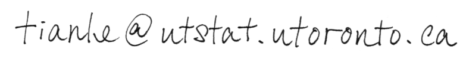

Personal.

I'm CHEN, TIANLE
(pronounced here),
a PhD student at the University of Toronto in the Department of Statistical Sciences.
My interests are in Applied Machine Learning, specifically applications in retail and financial services.
Check out my resume.
Publications.
Joint Forecasting of Purchase Times for Individuals
Chen, T., Keng, B., Moreno, J. (2018)
Multivariate Arrival Times with Recurrent Neural Networks for Personalized Demand Forecasting
Published in Proceedings of IEEE International Conference on Data Mining 2018 DMS Workshop.
Check out the GitHub repository at
github.com/tianle91/matrnn.
Arxiv copy
here.
Estimating Unreported Claims
Badescu, A.L., Chen, T., Lin, X.S., & Tang, D. (2018)
A Marked Cox model for the Number of IBNR Claims: Estimation and Application
Submitted to ASTIN Bulletin.
Repository for demo code available by request.
Contact.
Email:
Gmail
PGP
Utstat
PGP

Social Media:
Tweets @tianlegit.
LinkedIn here.
Miscellaneous.
Mine Monero (for me):
here.
Monero public key: 49LnijGrxTkRYovAcbVVgeDWTVcsVFCbNiwU9ejtTckWcoe24hugHzAZv4MKQvQi3UDeipS4nPEBU65G5tST1orJ1e8RwEe.
Web design inspired by www.berkshirehathaway.com.